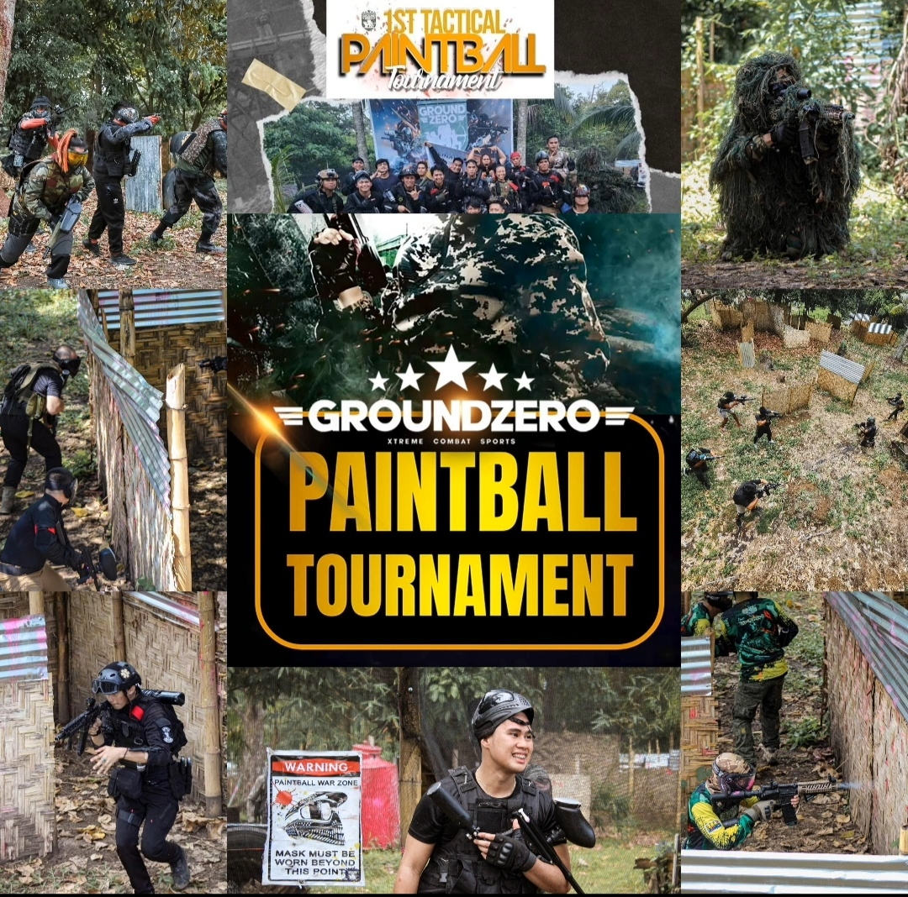

Paintball is a game where color painted pellets is fired from a compressed gas powered gun. In Davao City, a first tactical paintball tournament was held. It was compose of different teams all around the city fighting for a historical championship game. The game does not only promotes fun but as well as promotes teamwork since every player should communicate their tactical methods in order to win. The G6 TEAM was able to defend their battefield by sticking to one deadly method playgame. Paintball game gives excitement and to become part of the winning team, you might visit the GROUND ZERO battlefield at Bago Aplaya, Davao City, Philippines.
A REALISTIC WARZONE WITH COLORFUL PELLET GUN SHOTS